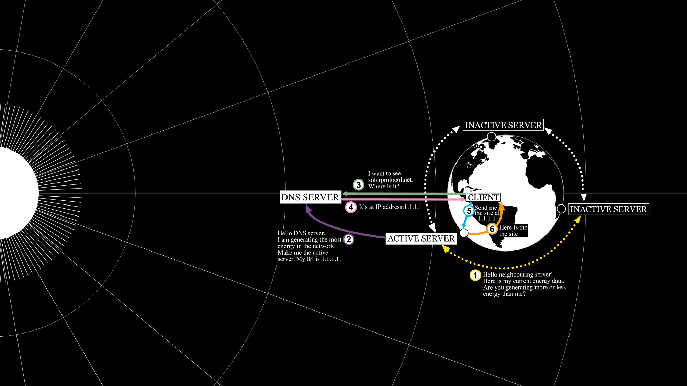

GUIDE: Background
How does Solar Protocol work?
Solar Protocol relies on a network of small solar powered servers, that are stewarded by volunteers around the world. Each server generates its own energy supply from a solar panel, and is connected to the other solar servers in the network via its internet connection. The Solar Protocol website is collectively served from this network of servers. A copy of the website is saved on each server and then when a browser makes a request for the site, the website is sent out from whichever server is in the most sunlight at a given time. This server is called the active server. Each of the servers communicates with one another and compares their energy data to determine which one is receiving the most sunlight and therefore generating the most energy at any given time. This process is broken down in more detail below.
Collecting Electrical Data
Every few minutes each individual server logs its own electrical data. This data includes solar panel output, battery status, and energy consumption statistics. The server does this by communicating with a device called a charge controller. The charge controller is responsible for safely charging the battery from the solar panel. The specific charge controller used in the Solar Protocol systems was chosen because it has a communication protocol that can send and retrieve data.
Determining Which Server is the Active Server
There are a number of other pieces of software (called scripts) that run in the background on all Solar Protocol servers. The frequency of these processes is based on available energy. This means that when power is more plentiful for a particular server it runs these processes more often.
One of these scripts determines whether the server is producing the most power when compared to other servers in the network. This entails requesting solar power data from all the other servers in the network via the system’s API. (An API stands for for Application Programming Interface and describes the set of instructions for communicating with a computer program.) The server then compares the energy data from the other servers against its own data and if it is producing the most power it determines it is the active server. In instances where servers have different size solar arrays we scale them down so they are comparable.
If the server determines that it should be the active server, it then updates the Solar Protocol website records so that the URL, www.solarprotocol.net, is pointed to its location. A server’s location is described by its IP address, which is a long number that tells a browser where to find the content of different websites. The records that connect a URL with an IP address are called the DNS records.
The DNS system is like an automated phone book for the internet. It associates a URL with a server location and it enables your browser to get the content you expect when you go to a particular website. When you go to a website, behind the scenes, your browser checks the DNS records to find the site’s location before requesting its content and displaying it for you.

If the server determines that it is not the active server because another server on the network is producing more power than it is, it does nothing. This helps avoid conflicts between servers. Also, because each server has the autonomy to make this decision on its own, the system can continue to function even if many servers are offline and this makes it resilient.
Back to guides